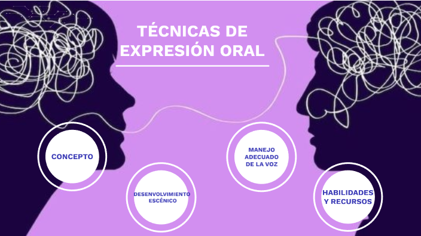

Principios básicos de la comunicación.
*Elementos del lenguaje no verbal
*Comunicación asertiva
* Presentación efectiva .
*Normas elementales para hablar en público

Existen unos principios básicos de la comunicación entre las personas, que se aplican también a todo tipo de trabajos periodísticos o comunicativos. Estos principios son:
1. Llamar la atención: En el inicio de toda comunicación, se tiene que lograr que el otro o los otros presten su atención, si no todo el esfuerzo que se hace no sirve para nada y la gente no va a escuchar o no se va a interesar en lo que se dice.
Tengo que inventarme algo para llamar la atención de la gente desde el primer momento. Por ejemplo, a través de algo que cause una emoción en la otra persona: Contar algo muy bonito, algo horrible, algo nuevo y sorprendente, un sabor, un olor, un dolor, un sonido. Obviamente debería tener una conexión con nuestro tema.
2. Pasar la información: Después de haber conseguido la atención del otro pasamos nuestra información. Si uno se extiende mucho existe el peligro que se pierda la atención de la gente. Entonces toca inventarse cada rato algo para mantener la atención. Por ejemplo, preguntarles algo al público o presentar otro elemento nuevo y sorprendente.
3. El mensaje principal: Al final de nuestra intervención presentamos nuestro mensaje principal, nuestra conclusión. Por ejemplo: ¡Usar el tapabocas salva vidas!
Estos tres principios básicos debemos aplicarnos siempre que vamos a comunicar o informar algo.
La comunicación humana se caracteriza por la omnipresencia, la irreversibilidad, la inevitabilidad, el dinamismo, la transaccionalidad y la comunicación verbal y no verbal.
· Elementos del lenguaje no verbal
La comunicación no verbal se compone de gestos, miradas, movimientos de las manos y brazos, postura, risas, sonidos guturales, tono y velocidad de la voz, entre otros rasgos.
La comunicación no verbal, también llamada lenguaje corporal, es el proceso de enviar y recibir mensajes sin utilizar palabras, ya sean habladas o escritas. Al igual que algunos signos ortográficos son útiles para enfatizar el lenguaje escrito, el comportamiento no verbal puede enfatizar partes de un mensaje verbal.
Se considera que en una comunicación cara a cara, el comportamiento no verbal representa un importante porcentaje de la información que transmitimos, frente al resto que se corresponde con la comunicación verbal: de ahí la importancia de tener en cuenta la comunicación no verbal.
No debemos confundir la comunicación no verbal con la comunicación no hablada (oral), ya que existen formas de comunicación no verbales, como la escrita o las lenguas de signos, que tampoco son orales.
*Comunicación asertiva
Comunicarse asertivamente significa decir lo que uno quiere decir, sin herir los sentimientos de los demás
Tipos de comunicación asertiva
*Comunicación asertiva basada en la expresión de sentimientos. ...
*Basada en expresar el respeto por los otros. ...
*Basada en implementar una escucha activa. ...
*Basada en el control de las propias emociones. ...
*Basada en contacto visual. ...
*Basada en mantener control sobre nuestro tono de voz.
Presentación efectiva
Una presentación efectiva es aquella que es capaz de captar y retener la atención del público, que entrega un mensaje que es recordado, y que impacta en la audiencia para que esta realice una acción determinada.
¿Cómo hacer una presentación efectiva?
*Sintetizar y estructurar tu exposición. ...
*Conectar con tu audiencia. ...
*Adaptar las fuentes al tema. ...
*Elegir el color adecuado según el tema. ...
*Representar datos mediante gráficos. ...
*Utilizar líneas de tiempo en tu presentación. ...
*Seleccionar imágenes adecuadas para tu presentación. ...
*Animar tu presentación.
Normas elementales para hablar en público
*Domina tu tema.
*Conoce a tu audiencia.
*Sé breve, sé claro y verosímil.
*Relájate.
*No finjas ni pretendas nada. ...
*Sé simpático y actúa con naturalidad.
Orígenes de la comunicación no verbal
El término comunicación no verbal fue introducido en 1956 por el psiquiatra Jurgen Ruesch y el autor Weldon Kees en el libro «Nonverbal Communication: Notes on the Visual Perception of Human Relations«.
Sin embargo, la conducta no verbal ha sido reconocida desde hace siglos como un aspecto fundamental de la comunicación. Un ejemplo podemos encontrarlo en «The Advancement of Learning» (1605), obra en la que Francis Bacon observó que «los lineamientos del cuerpo revelan la disposición e inclinación de la mente en general, pero los movimientos del semblante y de las partes no sólo lo hacen, sino que revelan además el humor y el estado actual de la mente y la voluntad».
¿Cuáles son los elementos de la comunicación no verbal?
Expresiones faciales
El rostro humano es capaz de expresar innumerables emociones sin decir una palabra. Y a diferencia de algunas formas de comunicación no verbal, las expresiones faciales de las emociones son universales. Las expresiones faciales de felicidad, tristeza, ira, sorpresa, miedo y asco son las mismas en todas las culturas.
Movimientos corporales y postura
La percepción de las personas sobre nosotros varía en función de la forma en la que nos sentamos, caminamos, nos levantamos o sostenemos la cabeza, ya que el modo en la que nos movemos y comportamos comunica una gran cantidad de información al exterior. Este tipo de comunicación no verbal incluye la postura, el porte, la posición y los movimientos.
Gestos
Los gestos forman parte de nuestra vida cotidiana. Saludamos, señalamos, hacemos señas y utilizamos las manos cuando discutimos o hablamos animadamente, expresándonos con gestos a menudo de forma inconsciente. Sin embargo, el significado de los gestos puede ser muy diferente según la cultura y la región, por lo que es importante tener cuidado para evitar interpretaciones erróneas.
Los gestos, movimientos corporales y posturas son estudiadas por la kinésica también conocida como cinésica o quinésica.
Contacto visual
Dado que el sentido visual es dominante para la mayoría de las personas, el contacto visual es un tipo de comunicación no verbal especialmente importante. La forma de mirar a alguien puede comunicar muchas cosas, como interés, afecto, hostilidad o atracción. El contacto visual también es crucial para mantener el flujo de la conversación y para calibrar la respuesta de la otra persona.
El tacto
Nos comunicamos mucho a través del tacto. Piensa en los mensajes que transmiten: un firme apretón de manos, una tímida palmada en el hombro, un cálido abrazo de oso, una palmadita en la espalda que da seguridad, un gesto condescendiente en la cabeza o un apretón controlador en el brazo.
Espacio
¿Alguna vez nos hemos sentido incómodos durante una conversación porque la otra persona estaba demasiado cerca e invadía nuestro espacio? Todos tenemos necesidad de espacio físico, aunque esa necesidad difiere según la cultura, la situación y la cercanía de la relación.
Podemos utilizar el espacio físico para comunicar muchos mensajes no verbales diferentes, como señales de intimidad, agresión, dominio o afecto. A este concepto se le denomina proxémica, que no es otra cosa que la disciplina que estudia la relación espacial entre personas como manifestación social y significante.
Voz
No es sólo lo que decimos, sino cómo lo decimos. Cuando hablamos, los demás «leen» nuestra voz, además de prestar atención a nuestras palabras en un proceso de escucha activa. Se fijan en el tiempo y el ritmo, en el volumen de la voz, en el tono y la inflexión, y en los sonidos que transmiten comprensión y asentimiento. Pensemos que el tono de voz puede mostrar sarcasmo, enfado, afecto o confianza.
Aquí entra en juego la paralingüística, ciencia que estudia elementos como la intensidad o volumen de la voz; la velocidad de emisión de los enunciados; el tono, variantes y matices de la entonación y duración silábica o el volumen.
¿Qué roles y funciones juega el comportamiento no verbal?
Repetición: la comunicación no verbal refuerza el mensaje que emitimos verbalmente.
Contradicción: nuestra conducta no verbal puede contradecir el mensaje que intentamos transmitir, indicando así al oyente que, en ciertos casos, quizá no estemos diciendo la verdad.
Sustitución: la comunicación no verbal puede sustituir a un mensaje verbal. Por ejemplo, nuestra expresión facial suele transmitir un mensaje mucho más vívido que las palabras.
Complemento: puede añadir o complementar su mensaje verbal. Como jefe, si además de elogiar a un empleado le damos una palmadita en la espalda, puede aumentar el impacto de nuestro mensaje.
Acentuar: puede acentuar o subrayar un mensaje verbal. Golpear la mesa, por ejemplo, puede subrayar la importancia de su mensaje.